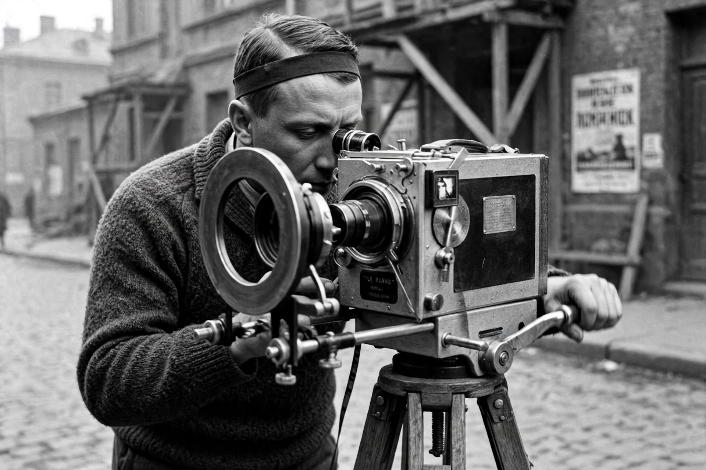

Soviet film director and theorist (1896–1954)
| Dziga Vertov | |
|---|---|
 Vertov, pioneer of the Kino-Eye | |
| Born | David Abelevich Kaufman, 2 January 1896, Białystok, Russian Empire |
| Died | 12 February 1954 (aged 58), Moscow, Soviet Union |
| Occupation | Film director, theorist |
| Notable work | Man with a Movie Camera (1929) |
Dziga Vertov (born David Abelevich Kaufman; 2 January 1896 – 12 February 1954) was a Soviet pioneering documentary film and newsreel director, as well as a cinema theorist. His filming practices and theories influenced the cinéma vérité style of documentary filmmaking and the Dziga Vertov Group, a radical filmmaking cooperative active in the 1960s. His brothers Boris and Mikhail Kaufman were also notable filmmakers.
Vertov adopted his name — from the Ukrainian/Russian dziga, a spinning top, and vertov, "to spin" — and after the Russian Revolution edited newsreels for the Moscow Cinema Committee. With his wife Elizaveta Svilova and brother Mikhail he formed the "Council of Three" and issued the WE: Variant of a Manifesto (1922), proclaiming the Kino-Eye: the camera, perfected by montage, could perceive and organise the world better than the human eye. His Kino-Pravda ("Film Truth") newsreel series applied these ideas to everyday Soviet life.
His masterpiece, Man with a Movie Camera (1929), portrays a day in the life of Soviet cities — Kyiv, Kharkiv, Moscow, and Odesa — while constantly exposing its own making: the cameraman filming, the editor at her bench, the audience in the cinema. It uses split screens, freeze frames, extreme angles, and accelerated and reversed motion. Long neglected, it was voted the greatest documentary of all time in the British Film Institute's 2014 Sight and Sound poll of critics.
Vertov's sound films, including Enthusiasm (1931) and Three Songs About Lenin (1934), met increasing official resistance as socialist realism hardened, and he spent his final decades editing conventional newsreels. His ideas were revived in the 1960s by Jean Rouch's cinéma vérité and by Jean-Luc Godard and Jean-Pierre Gorin's Dziga Vertov Group.